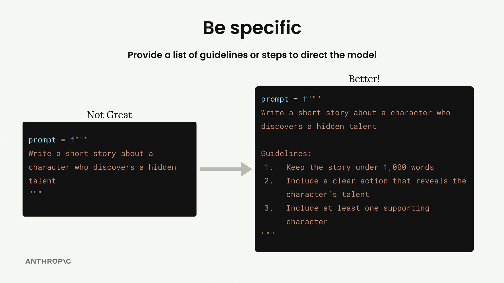
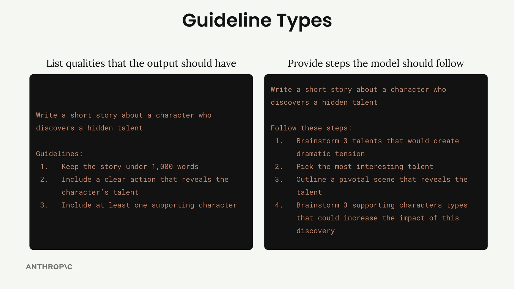
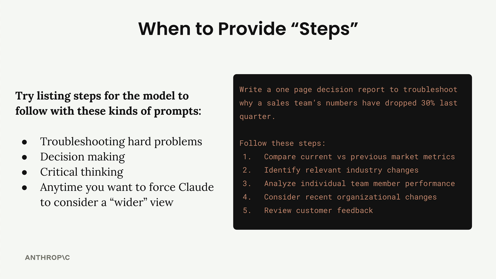

Конкретика
Чему научитесь
Видео 5:14 и текст урока
К концу урока вы сможете:
- различать указания о качестве ответа и шаги процесса;
- решать, когда добавлять пошаговые инструкции;
- сочетать оба вида конкретики в одном промпте.
Видео и текст урока.
Смотреть урок на Skilljar Being specific · 5:14Один из самых действенных способов улучшить результаты Claude — конкретно сказать, чего вы хотите. Вместо того чтобы оставлять всё на усмотрение модели, можно дать чёткие указания или шаги, которые направят Claude к нужному виду ответа.
Представьте: вы просите Claude «write a short story about a character who discovers a hidden talent». Вариантов бесконечно много. Рассказ может быть на 200 слов или на 2000. В нём может быть один персонаж или пять. Он может быть о любом сценарии открытия таланта.

Добавляя конкретные указания, вы даёте Claude более чёткую цель. Это резко повышает и стабильность, и качество ответа.
Два вида указаний
Есть два основных способа добавить конкретики в промпт, и в профессиональных приложениях их часто используют вместе.

Указания о качестве ответа
Первый вид — перечислить качества, которыми должен обладать ответ. Такие указания помогают управлять:
- длиной ответа;
- структурой и форматом;
- конкретными свойствами или элементами, которые нужно включить;
- требованиями к тону или стилю.
Например, можно указать, что рассказ должен быть короче 1000 слов, содержать ясное действие, раскрывающее талант персонажа, и хотя бы одного второстепенного персонажа.
Шаги процесса
Второй вид — дать Claude конкретные шаги. Это особенно полезно, когда вы хотите, чтобы Claude системно продумал задачу или рассмотрел несколько точек зрения, прежде чем прийти к ответу.
Вместо того чтобы сразу писать, можно попросить Claude:
- придумать три таланта, которые создадут драматическое напряжение;
- выбрать самый интересный;
- набросать ключевую сцену, в которой талант раскрывается;
- придумать типы второстепенных персонажей, которые усилят впечатление.
Эффект на практике
Разница от конкретики огромная. При проверке промпта для плана питания добавление указаний подняло балл оценки с 3.92 до 7.86 — качество выросло более чем вдвое только за счёт того, что Claude прямо сказали, какие элементы включить.
Guidelines: 1. Include accurate daily calorie amount 2. Show protein, fat, and carb amounts 3. Specify when to eat each meal 4. Use only foods that fit restrictions 5. List all portion sizes in grams 6. Keep budget-friendly if mentioned
Когда что использовать
Практическое правило, когда использовать каждый вид конкретики:
Указания о качестве — всегда
Указания о качестве стоит добавлять почти в каждый промпт. Это ваша страховка, чтобы получать стабильные и полезные результаты.
Шаги процесса — для сложных задач
Добавляйте пошаговые инструкции, когда имеете дело с:
- поиском причин сложных проблем;
- принятием решений;
- задачами на критическое мышление;
- любой ситуацией, где Claude должен рассмотреть вопрос с разных сторон.

Например, если вы просите Claude разобраться, почему упали показатели отдела продаж, стоит провести его через анализ рыночных метрик, изменений в отрасли, результатов отдельных сотрудников, организационных изменений и отзывов клиентов — а не позволить сосредоточиться на одной возможной причине.
Оба подхода вместе
В профессиональных промптах часто используют обе техники сразу: указания управляют форматом и содержанием ответа, а шаги гарантируют, что Claude тщательно продумает задачу, прежде чем отвечать.
Такое сочетание даёт и стабильность результатов, и уверенность, что Claude учёл все важные факторы, прежде чем прийти к выводу.
Дальше
Следующий приём — структура: как XML-теги отделяют данные от инструкций в больших промптах.
Оригинал урока: Being specific.